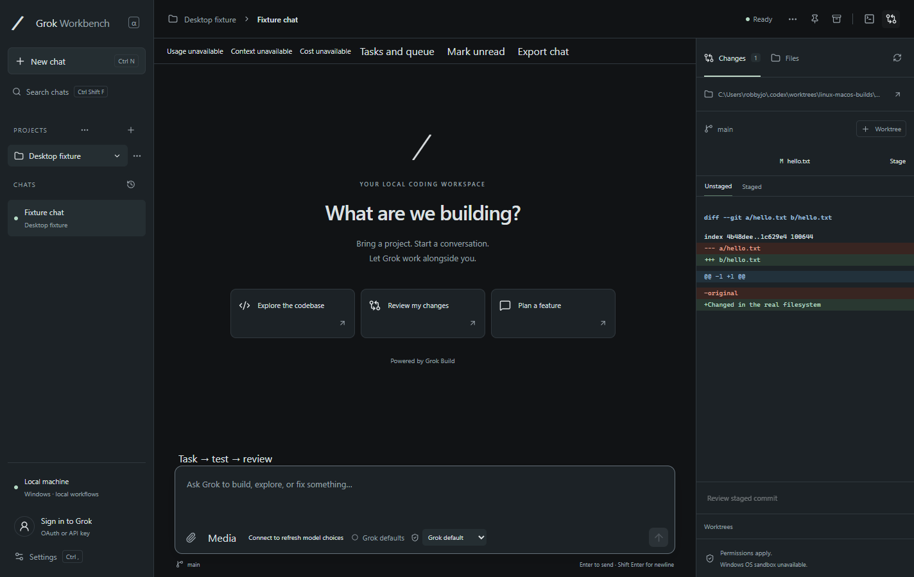

Bring a project. Start a chat.
Organize projects and conversations, attach files or screenshots, and follow Grok’s tool activity as it works.
WINDOWS DESKTOP · OPEN SOURCE · 0.8.4 ALPHA
An open-source graphical user interface (GUI) for Grok Build on Windows.
Chat, edit files, review changes, and run your tools in one place.
Windows 10/11 x64 · Portable executable · Unsigned alpha
Release notesSHA-256 checksum
A PLACE TO BUILD
Your conversation and your code, side by side.

Organize projects and conversations, attach files or screenshots, and follow Grok’s tool activity as it works.
Edit files in the built-in Monaco editor. Inspect Git diffs, stage changes, and review a commit before pushing.
Open terminal tabs, connect MCP servers, and work with Git worktrees. Grok’s native engine is included.
QUICK START
No separate Grok CLI installation.
Just the app and a project to work on.
Save Grok-Workbench-0.8.4-Portable.exe in a writable folder, then open
it. The alpha is currently unsigned.
Click Sign in to Grok above Settings. Complete Grok OAuth sign-in in your browser, or save an xAI API key in the app. Model requests need internet access and account access/billing.
Use the + beside Projects to choose a local folder, then start a chat. Install Git and your project’s development tools for the workflows that need them.
Send a prompt like this:
Explain how this project is organized and suggest one small improvement. Wait for me before changing files.
Respond to project-trust and tool-approval requests above the composer. Inspect any edits in Changes; use Stop turn to cancel.
Keep your workspace with you. Portable data lives in
Grok Desktop Data beside the executable. Move both together. Encrypted API
keys may need re-entry on another PC or Windows account.
Choose permissions thoughtfully. Agent tools run with your Windows permissions. Approval choices control tool requests; Grok’s OS-level agent sandbox is unavailable on Windows. About isolation
READY WHEN YOU ARE